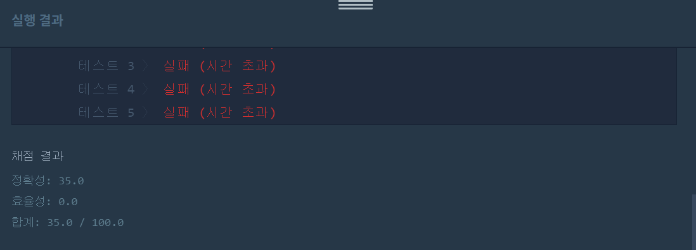
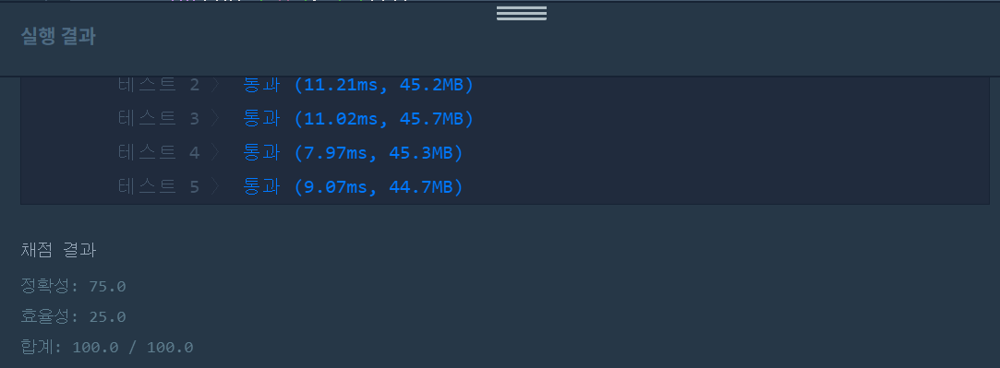

문제
https://programmers.co.kr/learn/courses/30/lessons/42885
( ᐛ )و 첫 번째 도전
1. 설계
- 오름차순으로 정렬한다.
- 앞뒤 인덱스를 둬서 체크한다.
- 탈출할 수 있으면 해당 값을 삭제한다.
- 다시 i, j 인덱스를 원위치로 두고 체크한다.
2. 구현
import java.util.List;
import java.util.Arrays;
import java.util.Collections;
import java.util.stream.Collectors;
/**
*
* @author HEESOO
*
*/
class Solution {
public int rescue(List<Integer> list, int limit){
int i=0, j=list.size()-1;
int answer=0;
while(list.size()>0){
if(list.size()==1){
answer++;
break;
}
if(list.get(i)+list.get(j)<=limit){
list.remove(i);
list.remove(j);
j=list.size()-1;
answer++;
}
else{
j--;
if(j<=0){
list.remove(i);
answer++;
j=list.size()-1;
}
}
}
return answer;
}
public int solution(int[] people, int limit) {
int answer = 0;
List<Integer> list=Arrays.stream(people).boxed().collect(Collectors.toList());
Collections.sort(list);
answer=rescue(list, limit);
return answer;
}
}
3. 결과
 실패.
4. 문제점
바보같이 int[]는 오름차순으로 정렬 못한다고 생각하고(내림차순이 Integer[]로 변환후 사용인데) List로 바꿔서 사용했다. 리스트에서 값을 모두 체크하고 삭제하는 과정때문에 효율성이 낮아졌다.
( ᐛ )و 두 번째 도전
1. 설계
- 오름차순으로 정렬하되, int[]를 그대로 사용한다.
- 앞뒤 인덱스 i, j를 두어 체크한다.
2. 구현
import java.util.Arrays;
/**
*
* @author HEESOO
*
*/
class Solution {
public int solution(int[] people, int limit) {
int answer = 0;
int j=people.length-1;
Arrays.sort(people);
for(int i=0;i<=j;i++){
while(i<j&&people[i]+people[j--]>limit){
answer++;//j꺼
}
answer++;//i(+j)꺼
}
return answer;
}
}
3. 코드 설명
- Arrays.sort()로 people을 오름차순 정렬한다.
- i는 앞에서부터, j는 뒤에서부터 순회한다.
- i, j가 만나면 배열 원소들을 모두 읽은 것이므로 종료한다.
- for문: for문의 조건 중 i<j가 아니라 i<=j 이유는, i가 혼자 남았을 경우 i의 answer++을 위해 for문에 들어오게 하도록 하기 위함이다.
- while문: 해당 while문은 i+j값이 limit를 초과하는 경우를 체크한다. i+j<=limit를 만족하지 않는다는 뜻은, j와 더해서 limit를 만족할 값은 배열에 없다는 뜻이다. j가 최댓값이고 i가 최솟값인데 i와 만족하지 않는다면 i보다 큰 값들은 당연히 만족하지 않는다.
따라서 j는 홀로 탈출해야하므로 j의 answer을 더한다.
j–는 while문 안에 넣을 수 없다. j–가 while문 안에 있다면 i+j<=limit인 경우에는 해당 것에 대해 answer++을 한 후 j가 앞으로 인덱스 조정이 일어나지 않기 때문이다. - while문을 탈출한 경우는 i에 만족하는 j가 있거나, 없을 경우이다. 있다면 i+j것을, 없다면 i 홀로 탈출하므로 answer++이다.
4. 결과
 성공٩(˘◊˘)۶
해결 완료!
그래도 나름 처음 접근은 좋았다! 오름차순으로 정렬해 인덱스를 앞뒤로 순회하면서 문제를 해결한다는 것은 맞았다. 이를 간단하고 효율적으로 코딩하는 것에서 헤맸지만..